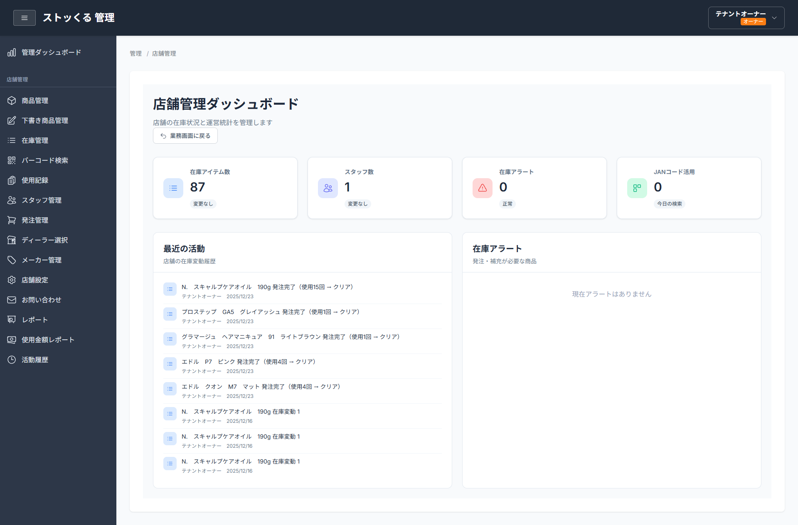
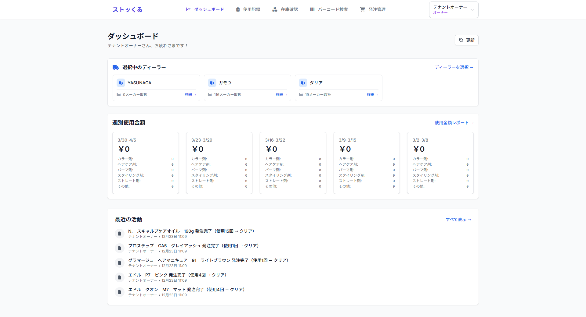
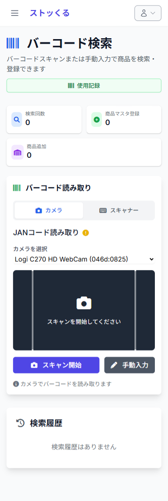
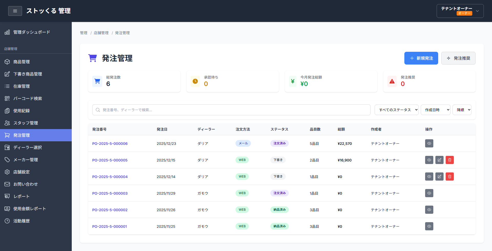

商品バーコードをスキャンするだけで在庫の入出庫を管理できるWebアプリ。小売・飲食・EC系の個人事業主や小規模店舗向けに、シンプルな操作性と実用的な機能を両立した。




JANコードスキャン時に楽天商品APIと連携し、商品名・画像・価格を自動取得。未登録商品でも即座に商品マスタへ登録できる。API取得失敗時も統一した自動下書き作成フローに落ちるよう設計した。
マルチテナント構成で複数店舗を一元管理。テナントごとにデータを完全分離し、テナントオーナー・スタッフ・システム管理者の3ロールで権限を制御している。
GitHub ActionsによるCI/CDパイプラインを構築し、developブランチへのマージで自動デプロイが走る体制を整えた。